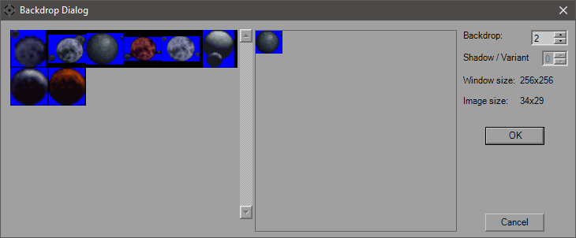

Backdrop Dialog
The Backdrop Dialog is the visual interface used for choosing the backdrop including variants when available
The image above shows the interface for XWA (with DTM's Super Backdrops), where the Shadow/Variant field is available. In most cases, this moves the cresent shadow across the planet. For certain backdrops however, this simply shows a different image. Use the scroll bar to scan through the primary images and click on it to select. If custom backdrops have been installed properly, YOGEME will detect and display them instead of the defaults for XWA. For oversized images (SBD 55-0, for example), the image will shrink to fit the window.
New in v1.11 is the color-picker feature. The Color numbers reflect the RGB of the selected pixel, and the color swatch shows the color below the mouse pointer. Clicking will update the RGB values and copy them to YOGEME's internal clipboard, which you can then paste into the backdrop's RGB name so you can color-match the light source with the backdrop itself.

This is the appearance of the Dialog when using XvT. BoP has a few more choices added on and TIE will display the images in the display window at twice their size. The blue (0x0000FF) is the transparency color used in the LfdReader.dll, rest assured that won't appear in-game. The shadow field isn't available, but you can still click the image you'd like to use.
Hit the 'OK' button to use the image or 'Cancel' to make no changes.